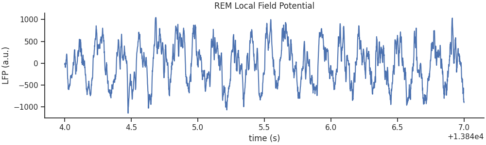
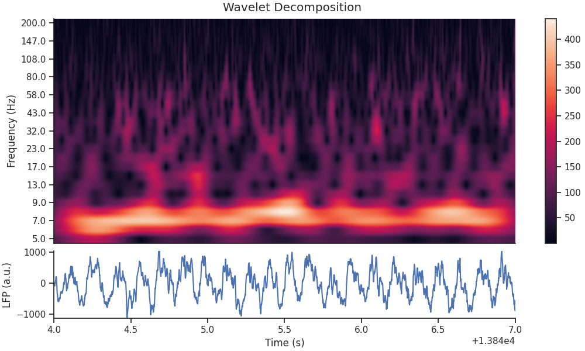
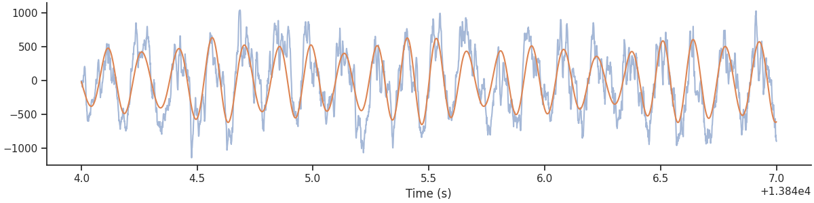
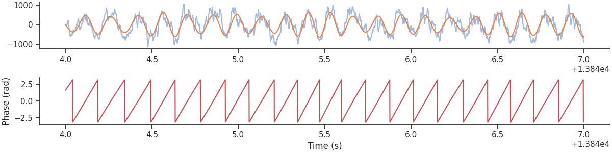
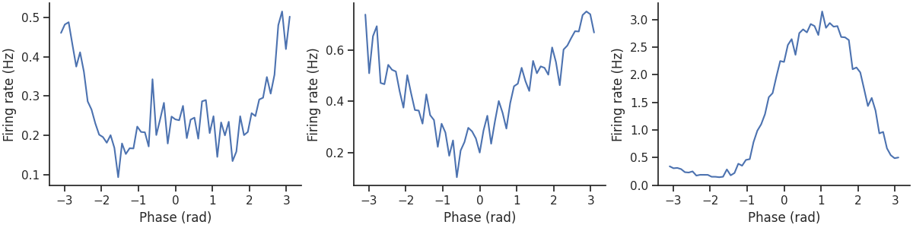
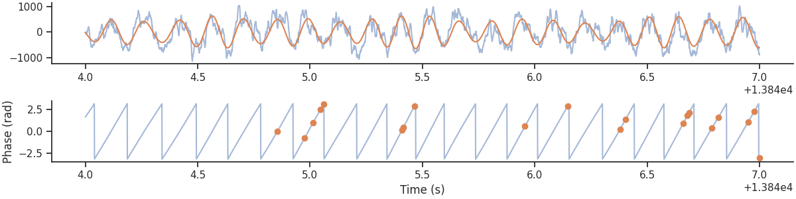

Note
Click here to download the full example code
Spikes-phase coupling
In this tutorial we will learn how to isolate phase information using band-pass filtering and combine it with spiking data, to find phase preferences of spiking units.
Specifically, we will examine LFP and spiking data from a period of REM sleep, after traversal of a linear track.
This tutorial was made by Kipp Freud & Guillaume Viejo
Warning
This tutorial uses matplotlib for displaying the figure
You can install all with pip install matplotlib requests tqdm seaborn
mkdocs_gallery_thumbnail_number = 6
First, import the necessary libraries:
import math
import os
import matplotlib.pyplot as plt
import numpy as np
import pandas as pd
import requests
import scipy
import seaborn
import tqdm
custom_params = {"axes.spines.right": False, "axes.spines.top": False}
seaborn.set_theme(context='notebook', style="ticks", rc=custom_params)
import pynapple as nap
Downloading the data
Let's download the data and save it locally
path = "Achilles_10252013_EEG.nwb"
if path not in os.listdir("."):
r = requests.get(f"https://osf.io/2dfvp/download", stream=True)
block_size = 1024 * 1024
with open(path, "wb") as f:
for data in tqdm.tqdm(
r.iter_content(block_size),
unit="MB",
unit_scale=True,
total=math.ceil(int(r.headers.get("content-length", 0)) // block_size),
):
f.write(data)
Loading the data
Let's load and print the full dataset.
Out:
Achilles_10252013_EEG
┍━━━━━━━━━━━━━┯━━━━━━━━━━━━━┑
│ Keys │ Type │
┝━━━━━━━━━━━━━┿━━━━━━━━━━━━━┥
│ units │ TsGroup │
│ rem │ IntervalSet │
│ nrem │ IntervalSet │
│ forward_ep │ IntervalSet │
│ eeg │ TsdFrame │
│ theta_phase │ Tsd │
│ position │ Tsd │
┕━━━━━━━━━━━━━┷━━━━━━━━━━━━━┙
Selecting slices
For later visualization, we define an interval of 3 seconds of data during REM sleep.
Here we restrict the lfp to the REM epochs.
tsd_rem = data["eeg"][:,0].restrict(data["rem"])
# We will also extract spike times from all units in our dataset
# which occur during REM sleep
spikes = data["units"].restrict(data["rem"])
Plotting the LFP Activity
We should first plot our REM Local Field Potential data.
fig, ax = plt.subplots(1, constrained_layout=True, figsize=(10, 3))
ax.plot(tsd_rem.restrict(ep_ex_rem))
ax.set_title("REM Local Field Potential")
ax.set_ylabel("LFP (a.u.)")
ax.set_xlabel("time (s)")

Out:
Getting the Wavelet Decomposition
As we would expect, it looks like we have a very strong theta oscillation within our data - this is a common feature of REM sleep. Let's perform a wavelet decomposition, as we did in the last tutorial, to see get a more informative breakdown of the frequencies present in the data.
We must define the frequency set that we'd like to use for our decomposition.
We compute the wavelet transform on our LFP data (only during the example interval).
Now let's plot the calculated wavelet scalogram.
# Define wavelet decomposition plotting function
def plot_timefrequency(freqs, powers, ax=None):
im = ax.imshow(np.abs(powers), aspect="auto")
ax.invert_yaxis()
ax.set_xlabel("Time (s)")
ax.set_ylabel("Frequency (Hz)")
ax.get_xaxis().set_visible(False)
ax.set(yticks=np.arange(len(freqs))[::2], yticklabels=np.rint(freqs[::2]))
ax.grid(False)
return im
fig = plt.figure(constrained_layout=True, figsize=(10, 6))
fig.suptitle("Wavelet Decomposition")
gs = plt.GridSpec(2, 1, figure=fig, height_ratios=[1.0, 0.3])
ax0 = plt.subplot(gs[0, 0])
im = plot_timefrequency(freqs, np.transpose(cwt_rem[:, :].values), ax=ax0)
cbar = fig.colorbar(im, ax=ax0, orientation="vertical")
ax1 = plt.subplot(gs[1, 0])
ax1.plot(tsd_rem.restrict(ep_ex_rem))
ax1.set_ylabel("LFP (a.u.)")
ax1.set_xlabel("Time (s)")
ax1.margins(0)

Filtering Theta
As expected, there is a strong 8Hz component during REM sleep. We can filter it using the function nap.apply_bandpass_filter.
We can plot the original signal and the filtered signal.
plt.figure(constrained_layout=True, figsize=(12, 3))
plt.plot(tsd_rem.restrict(ep_ex_rem), alpha=0.5)
plt.plot(theta_band.restrict(ep_ex_rem))
plt.xlabel("Time (s)")
plt.show()

Computing phase
From the filtered signal, it is easy to get the phase using the Hilbert transform. Here we use scipy Hilbert method.
from scipy import signal
theta_phase = nap.Tsd(t=theta_band.t, d=np.angle(signal.hilbert(theta_band)))
Let's plot the phase.
plt.figure(constrained_layout=True, figsize=(12, 3))
plt.subplot(211)
plt.plot(tsd_rem.restrict(ep_ex_rem), alpha=0.5)
plt.plot(theta_band.restrict(ep_ex_rem))
plt.subplot(212)
plt.plot(theta_phase.restrict(ep_ex_rem), color='r')
plt.ylabel("Phase (rad)")
plt.xlabel("Time (s)")
plt.show()

Finding Phase of Spikes
Now that we have the phase of our theta wavelet, and our spike times, we can find the phase firing preferences
of each of the units using the compute_1d_tuning_curves function.
We will start by throwing away cells which do not have a high enough firing rate during our interval.
The feature is the theta phase during REM sleep.
phase_modulation = nap.compute_1d_tuning_curves(
group=spikes, feature=theta_phase, nb_bins=61, minmax=(-np.pi, np.pi)
)
Let's plot the first 3 neurons.
plt.figure(constrained_layout=True, figsize = (12, 3))
for i in range(3):
plt.subplot(1,3,i+1)
plt.plot(phase_modulation.iloc[:,i])
plt.xlabel("Phase (rad)")
plt.ylabel("Firing rate (Hz)")
plt.show()

There is clearly a strong modulation for the third neuron.
Finally, we can use the function value_from to align each spikes to the corresponding phase position and overlay
it with the LFP.
Let's plot it.
plt.figure(constrained_layout=True, figsize=(12, 3))
plt.subplot(211)
plt.plot(tsd_rem.restrict(ep_ex_rem), alpha=0.5)
plt.plot(theta_band.restrict(ep_ex_rem))
plt.subplot(212)
plt.plot(theta_phase.restrict(ep_ex_rem), alpha=0.5)
plt.plot(spike_phase.restrict(ep_ex_rem), 'o')
plt.ylabel("Phase (rad)")
plt.xlabel("Time (s)")
plt.show()

Total running time of the script: ( 0 minutes 3.112 seconds)
Download Python source code: tutorial_phase_preferences.py